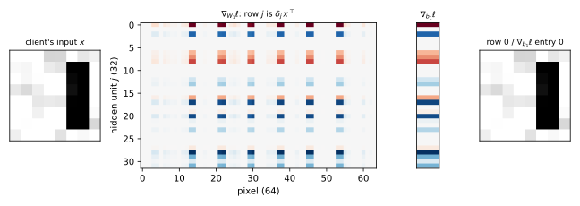

14 Gradient inversion
14.1 Why this matters
A phone keyboard learns from what its users type, and the raw text never leaves the phones. The server sends the current model to each phone, the phone computes the gradient of the loss on its own few examples, and only that gradient goes back. This is federated learning (FL), often described as private because “the data stay on the device”. If you design, review or red-team such a system, the question is: what does one client’s gradient reveal about the client’s data?
Often, everything, because many entries of a gradient are simple functions of the input. Take a fully connected layer, which computes \(a = Wx + b\). The weight \(W_{jk}\) multiplies the input \(x_k\), so nudging \(W_{jk}\) changes \(a_j\) by \(x_k\) times the nudge, and the loss responds to \(a_j\) at some rate \(\delta_j = \partial\ell/\partial a_j\) set by everything above the layer. The chain rule multiplies the two rates, and the bias, which is added to \(a_j\) directly, gets \(\delta_j\) alone: \[\nabla_W\ell = \delta\,x^\top, \qquad \nabla_b\ell = \delta. \tag{14.1}\] The weight gradient is an outer product: row \(j\) is the input \(x\) scaled by the single number \(\delta_j\), so the layer’s input sits in every row. The rest of the network, the loss and the label only set the scales. With one example the scale can be divided out; with a batch the gradient is a sum of one outer product per example, and the attacker’s job is to pull the sum apart.
The attacker here is an honest-but-curious server in the sense of Threat models and privacy games: it follows the protocol, sends the real model and only analyses what it receives. It knows the architecture and every parameter, because it chose them, and it sees each client’s update \(g = \frac1B\sum_i\nabla_\theta\ell(\theta; x_i, y_i)\), the average gradient over the client’s \(B\) examples. Reconstructions are scored by the relative error \(\lVert\hat x - x\rVert/\lVert x\rVert\) against the closest true example. The experiments use \(8\times8\) images of four shapes and a network with one hidden layer of 32 units at its random initialization: 2,212 gradient entries against 64 unknown pixels per example.
14.2 Exact recovery from a fully connected layer
For a single example, Equation 14.1 already gives the attack (Phong et al. 2018). Row \(j\) of the first layer’s weight gradient is \(\delta_{1,j}x^\top\), and entry \(j\) of its bias gradient is the same number \(\delta_{1,j}\), so dividing one by the other cancels the only unknown scale. Every unit \(j\) with a nonzero bias gradient gives \[x = \frac{(\nabla_{W_1}\ell)_{j,:}}{(\nabla_{b_1}\ell)_j}. \tag{14.2}\] No search, no prior on the data and no label are needed, and the attack checks itself: all usable units must give the same answer, so if their ratios agree, the attacker knows it has the input.
Take a two-unit ReLU network with \(W_1 = \begin{pmatrix}0.4 & -0.2 & 0.1\\ 0.3 & 0.5 & -0.4\end{pmatrix}\), \(b_1 = (0.1, -0.1)\), \(W_2 = \begin{pmatrix}1 & -1\\ 0.5 & 0.5\end{pmatrix}\) and no output bias, and an input \(x = (0.5, 1, 0.2)\) with the first class as label. The backward signal at the first layer is \(\delta_1 = (-0.3279, 0.9838)\), so the two rows of the weight gradient are \((-0.1640, -0.3279, -0.0656)\) and \((0.4919, 0.9838, 0.1968)\), visibly the same vector at two scales. Dividing each by its bias entry gives \((0.5, 1, 0.2)\) twice; Section 14.6 runs it. On an \(8\times8\) image and the 32-unit network, 13 units are switched on, and each of the 13 ratios equals the image to a relative error of at most \(6.7\times10^{-17}\), rounding error (Figure 14.1).

Because the division cancels \(\delta_1\), whatever produced \(\delta_1\) is irrelevant: twenty layers above the first, or a custom loss, change nothing. A ReLU unit switched off on \(x\) has \(\delta_{1,j} = 0\) and gives nothing, but one active unit is enough. Without a bias there is no denominator, yet every row still points along \(x\), so \(x\) is known up to one number that a one-dimensional search finds. The same division at a deeper fully connected layer yields that layer’s input, an intermediate feature vector. What really breaks the closed form is a convolutional first layer: a convolution applies one small filter at every position of the image, so its gradient is a sum of outer products over all the image patches, and no single division separates them. A batch of more than one example is a sum too, and breaks it only partly (Section 14.5).
14.3 Label recovery from the last layer
The label is often the most sensitive part of an example (the diagnosis, the next word typed), and the last layer gives it away by a sign (Zhao, Mopuri & Bilen 2020). With softmax and cross-entropy, the backward signal at the logits is the predicted probabilities minus the one-hot label, \(p - e_y\). Softmax probabilities lie strictly between 0 and 1, so every entry is positive except the one at the true label, \(p_y - 1\). By Equation 14.1 the last-layer bias gradient is exactly this signal, so for one example the label is the position of its only negative entry: \[y = \arg\min_k(\nabla_{b_2}\ell)_k. \tag{14.3}\] Without a bias the weight gradient tells the same story: its row \(k\) is the signal’s entry \(k\) times the hidden activations, and if those are never negative (ReLU or sigmoid) the multiplication keeps the sign, so the label is the only row with a negative sum. Both rules were right in 1,000 of 1,000 trials. Nothing in the argument depends on how good the model is, so they are exact at any point of training; only a probability that rounds to 1 in floating point hides the sign.
For a batch of \(B\), the bias gradient is the average of \(p_i - e_{y_i}\). The one-hot parts add up to the label histogram, and the probability parts to the model’s total predicted probability for each class, so the number \(n_k\) of examples of class \(k\) is \[n_k = \sum_{i=1}^Bp_{ik} - B\,(\nabla_{b_2}\ell)_k. \tag{14.4}\] The equation is exact; the only unknown is the total prediction \(\sum_ip_{ik}\). The attacker knows the model, so it estimates that total as \(B\) times the model’s average prediction on data of its own, and rounds. Since true counts are integers, rounding is exact whenever the estimate is off by less than one half for every class.
A batch of 16 has true counts \((4, 2, 4, 6)\). With the average prediction taken over 200 of the attacker’s own images, Equation 14.4 gives \((3.88, 2.00, 4.19, 5.92)\), which rounds to the truth. Assuming the model predicts every class equally gives \((2.12, 3.01, 4.27, 6.60)\), which does not, because even an untrained network is not uniform. Over 200 random batches, the averaged estimate gets all counts exact for 1.000 of batches of 4, 0.975 of batches of 16 and 0.525 of batches of 64 (Figure 14.2): the error of the estimate grows with \(B\), and once it passes one half, rounding starts to miss, though the counts stay close.

So a batch leaks its label histogram even when no input is recovered. And knowing the label helps the next attack: it removes a discrete unknown, so the search of Section 14.4 runs over the input only.
14.4 Deep Leakage from Gradients
Convolutions, normalization layers or missing biases leave no closed form. Deep Leakage from Gradients (DLG) (Zhu, Liu & Han 2019) needs none: guess an input, compute the gradient it would produce, and move the guess until that gradient matches the one observed. If only the true input produces the observed gradient, a matching guess is the input. With the labels fixed as above, DLG minimizes the matching loss, the squared distance between the gradient of the guessed batch and \(g\): \[\hat x = \arg\min_{x'}R(x'), \qquad R(x') = \Big\lVert\frac1B\sum_{i=1}^B\nabla_\theta\ell(\theta; x_i', y_i) - g\Big\rVert^2. \tag{14.5}\] It starts from random noise and runs a gradient method on \(R\), which automatic differentiation provides by differentiating through the backward pass.
Two consequences follow from that construction. Since \(R\) is built from gradients, its own gradient is made of second derivatives of the network. ReLU’s slope is constant on each side of zero, so its second derivative is zero almost everywhere and the search gets no signal through it; that is why Zhu et al. replaced ReLU by the sigmoid, as the experiments here do. And since the true input has \(R = 0\), the smallest possible value, the final \(R\) reports the outcome: at rounding error the match is exact, while a loss that stopped falling well above zero means the search is stuck, because \(R\) is not convex.
On one image, the sigmoid network with 32 hidden units, and 600 steps of the Adam optimizer from uniform noise, the relative error is \(7.5\times10^{-2}\) at step 50, already visually correct, and \(5.8\times10^{-14}\) at step 600, with matching loss \(1.3\times10^{-27}\) (Figure 14.3).

A failed run is therefore an optimization failure, not evidence of privacy, and the attacker sees it and retries with restarts, better optimizers or image priors. Geiping et al. (2020), comparing gradients by cosine distance and penalizing differences between neighbouring pixels, recover recognizable images from trained networks and from batches.
14.5 Batches and averaging
Clients usually send a batch average, and averaging is often said to protect individuals: the gradient describes the batch, not anyone in it. Averaging does break Equation 14.2 and makes DLG harder, but the outer-product structure survives it.
The first-layer gradient is now a sum of \(B\) outer products, one per example. Every row is a combination of the \(B\) inputs, and the matrix has rank at most \(B\), so the server learns the subspace that contains the batch, which for \(B\) much smaller than the input dimension already rules out almost every input. A unit’s ratio from Equation 14.2 is now a weighted average of the inputs, each weighted by its share of the unit’s backward signal, and it equals one input exactly when the unit is active for that example only, when it isolates it. If each of \(m\) ReLU units fires on each example like an independent fair coin, a unit isolates a given example with probability \(2^{-B}\), and the example escapes only if all \(m\) units miss it: \[P_{\text{iso}}(B, m) = 1 - (1 - 2^{-B})^m. \tag{14.6}\] Each extra example halves the chance per unit, and each extra unit adds a chance. An even chance at \(B = 10\) needs 710 units, and real first layers have thousands.
A batch of 4 through the 32-unit ReLU network gives a rank-4 gradient, and the unit ratios recover all 4 images exactly, where the formula predicts 0.873 per example. Table 14.1 tests the formula more widely. For Gaussian inputs, whose units really do fire like coins, it matches. For images it is far too optimistic about privacy at large batches: at \(B = 16\) in the 1024-unit network it predicts 1.6% exposed, and 69.1% is. Images are correlated, so a unit tends to fire on many of them or on few, and units that fire on exactly one are much more common than coin flips allow (Figure 14.4).
| \(m\) | \(B\) | Equation 14.6 | Gaussian inputs | Images |
|---|---|---|---|---|
| 64 | 4 | 0.984 | 0.975 | 0.838 |
| 64 | 8 | 0.222 | 0.188 | 0.550 |
| 64 | 16 | 0.001 | 0.000 | 0.144 |
| 256 | 8 | 0.633 | 0.562 | 0.769 |
| 256 | 12 | 0.061 | 0.046 | 0.542 |
| 256 | 16 | 0.004 | 0.006 | 0.375 |
| 1024 | 12 | 0.221 | 0.196 | 0.850 |
| 1024 | 16 | 0.016 | 0.009 | 0.691 |

DLG has to untangle \(B\) inputs from one sum. On the sigmoid network it recovers all single images, 0.67 of examples in batches of 2, 0.29 at \(B = 4\) and none at \(B = 8\), where the matching loss stalls near \(10^{-5}\) and the reconstructions are blends. That is a stuck search, not missing information: 2,212 equations remain.
So batching is not a defence. The label histogram, the span and every isolated example come out exactly. Sending the parameter change after several local steps does not help either: every step’s first-layer gradient is built from outer products with the same inputs, so for one example the change is still a multiple of \(x^\top\) in every row, and the division still recovers \(x\). And all of this is what an honest server can do with random weights. A malicious server chooses the weights, and can plant units that fire on rare inputs only (Boenisch et al. 2023) or that sort inputs into bins by a feature (Fowl et al. 2022), so that most of a large batch is isolated by design. Defences have to change what the server sees: differential privacy (Part 3) bounds what any update reveals, and secure aggregation, which reveals only the sum over many clients, is introduced in Local, shuffle and distributed trust models.
14.6 Code
The hand example of Section 14.2, with the label rule and the isolation formula, in plain Python. The script indexes classes from 0, so label 0 is the first class.
from math import ceil, exp, log
Vector = list[float]
Matrix = list[Vector]
def client_gradient(w1: Matrix, b1: Vector, w2: Matrix, x: Vector, y: int) -> tuple[Matrix, Vector, Vector]:
"""What a client sends for one example: the gradients of W1, b1 and b2 (one ReLU layer, softmax, cross-entropy)."""
a = [sum(wk * xk for wk, xk in zip(row, x)) + bj for row, bj in zip(w1, b1)]
h = [max(aj, 0.0) for aj in a]
z = [sum(wk * hk for wk, hk in zip(row, h)) for row in w2]
total = sum(exp(zk) for zk in z)
delta2 = [exp(zk) / total - (1.0 if k == y else 0.0) for k, zk in enumerate(z)] # p - e_y
delta1 = [sum(delta2[k] * w2[k][j] for k in range(len(w2))) * (1.0 if a[j] > 0 else 0.0) for j in range(len(a))]
grad_w1 = [[dj * xk for xk in x] for dj in delta1] # outer product delta1 x^T
return grad_w1, delta1, delta2 # the bias gradients equal the backward signals
def recover_input(grad_w1: Matrix, grad_b1: Vector) -> Vector:
"""Exact recovery: a row of the weight gradient divided by its bias entry."""
j = next(j for j, g in enumerate(grad_b1) if g != 0.0)
return [g / grad_b1[j] for g in grad_w1[j]]
def recover_label(grad_b2: Vector) -> int:
"""The only negative entry of the last-layer bias gradient is the label."""
return min(range(len(grad_b2)), key=lambda k: grad_b2[k])
def isolation(batch: int, units: int) -> float:
"""Chance that some ReLU unit fires for one given example of the batch only, under the coin-flip model."""
return 1 - (1 - 2.0**-batch) ** units
def width_for_even_odds(batch: int) -> int:
"""Smallest number of units that isolates each example with probability at least 1/2."""
return ceil(log(2) / -log(1 - 2.0**-batch))
w1 = [[0.4, -0.2, 0.1], [0.3, 0.5, -0.4]]
b1 = [0.1, -0.1]
w2 = [[1.0, -1.0], [0.5, 0.5]]
gw1, gb1, gb2 = client_gradient(w1, b1, w2, x=[0.5, 1.0, 0.2], y=0)
print([round(v, 4) for v in recover_input(gw1, gb1)]) # [0.5, 1.0, 0.2]
print([round(v, 4) for v in gb2], recover_label(gb2)) # [-0.6559, 0.6559] 0
print(f"{isolation(4, 32):.3f}") # 0.873
print(width_for_even_odds(10)) # 710The full edition’s script runs every attack in this chapter on the image network, including DLG with a hand-written double backpropagation, in about half a minute:
uv run python code/part02-attacks/gradient_inversion.py14.7 Cheat sheet
| Result | Formula | Needs | Fails when |
|---|---|---|---|
| Outer product | \(\nabla_W\ell = \delta x^\top\), \(\nabla_b\ell = \delta\) | A fully connected layer | — |
| Exact recovery, one example | \(x = (\nabla_{W_1}\ell)_{j,:}/(\nabla_{b_1}\ell)_j\) | First layer fully connected with bias | Convolutional first layer; batches (partly) |
| Label, one example | \(y = \arg\min_k(\nabla_{b_2}\ell)_k\) | Softmax and cross-entropy | \(p_y\) rounds to 1 |
| Label counts, batch | \(n_k = \sum_ip_{ik} - B(\nabla_{b_2}\ell)_k\) | Last-layer bias; a guess of \(\sum_ip_{ik}\) | Large \(B\) with a poor guess |
| DLG | \(\min_{x'}\lVert G(x') - g\rVert^2\), \(G\) the gradient of the guessed batch | Twice-differentiable network; labels | Search stuck (final \(R \gg 0\)), larger batches |
| Span of a batch | Rank \(\le B\), rows in \(\operatorname{span}\{x_i\}\) | Fully connected first layer | — |
| Isolation | \(1 - (1 - 2^{-B})^m\) under independence | ReLU units, random weights | Real data: much slower decay |
Rules of thumb
- One example through a fully connected layer with a bias: the input costs one division, the label one sign.
- Batching helps against search but not against structure. Label counts, the span and every isolated example leak, and with real data that is most of a batch of 10 or more on a wide layer.
- An honest server can already do all of this; a malicious one can do it for large batches by design. Protect updates with differential privacy and secure aggregation, not with batching or local steps.
14.8 Further reading
- Zhu, Liu & Han, “Deep Leakage from Gradients” (NeurIPS 2019): the gradient-matching attack on images and text.
- Geiping, Bauermeister, Dröge & Moeller, “Inverting Gradients — How easy is it to break privacy in federated learning?” (NeurIPS 2020): cosine matching with an image prior, and attacks on trained networks, local steps and batches.
- Huang, Gupta, Song, Li & Arora, “Evaluating Gradient Inversion Attacks and Defenses in Federated Learning” (NeurIPS 2021): how attack strength depends on assumptions such as known labels and untrained models; read it before trusting a published attack number.
- Boenisch, Dziedzic, Schuster, Shamsabadi, Shumailov & Papernot, “When the Curious Abandon Honesty: Federated Learning Is Not Private” (IEEE EuroS&P 2023): trap weights and exact recovery from large batches by a malicious server.
Derivations. Every result in this chapter is derived step by step in the full edition’s chapter.